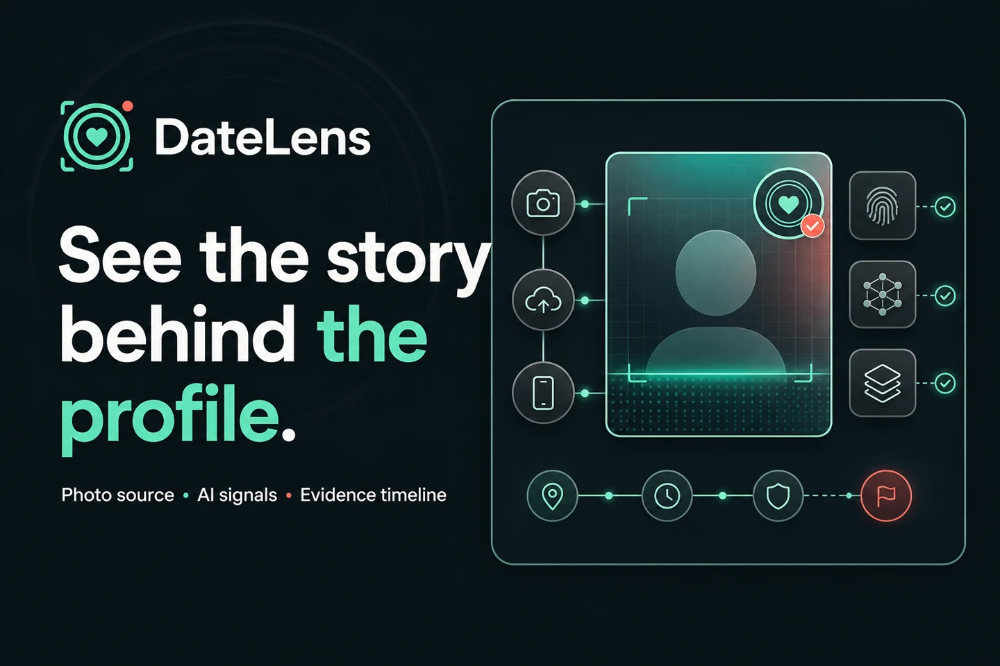
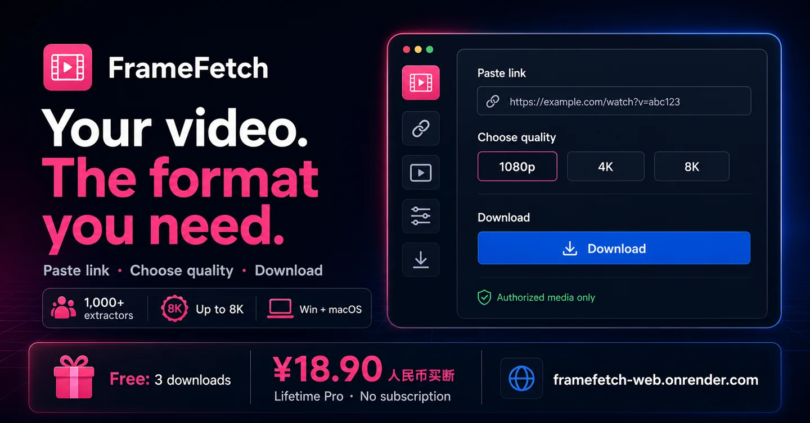

01 / Discover
Find the real constraint.
Map the people, data, tools and decisions that determine whether AI can create operational value.

Production AI SystemsLondon / Worldwide
For creative and technical teams: multimodal production, continuity review and knowledge agents, connected to existing tools with human approval.
Senior-led delivery · London / worldwide · Reply within 2 working days
System entry00.0 / 08.0
01 — Forward deployed
We work inside the operating environment until the system is useful, adopted and measurable.
That means sitting with the people doing the work, integrating the tools they already depend on, and owning the difficult distance between a compelling prototype and a dependable production system.
02 — Capabilities
Choose the operating path that matches the work. Production AI and growth automation now have separate scopes, evidence and enquiry routes.
Image, video, audio and language models assembled into controlled, repeatable production workflows.
Agents grounded in the right context, connected to real tools and constrained by explicit human decisions.
Production APIs, data pipelines and interfaces that place intelligence where the work actually happens.
Task-level evaluation, failure visibility, provenance and approval gates built into the system from day one.
Multimodal workflows, knowledge agents, production integration, evaluation and explicit human approval.
Explore production AI 02 / Growth automationAI reception, review workflows and revenue-ready websites—configured around the real operating environment.
Explore growth systemsClient growth systems
Configured to the operating environment—not sold as off-the-shelf software. Deploy them separately or connect all three into a measurable acquisition, booking and follow-up workflow.
Answers inbound calls from approved business information, captures the context your team needs and books appointments when the team is busy or offline, with explicit human-handoff rules.
Scope this systemBrings review requests, incoming feedback and response drafting into one traceable workflow. It classifies feedback and flags sensitive cases; publication follows your approval rules and each platform’s policies.
Scope this systemFast, accessible websites designed around a defined enquiry, booking or purchase journey. Clear offers, focused calls to action and a measurement plan make the path observable without promising a commercial result.
Scope this system03 — Delivery model
Senior-led delivery. Direct access. Clear technical ownership from the first workflow map to the operating system.
Discover
Observe the work, identify high-friction decisions and define a bounded production outcome.
Build
Deliver the smallest end-to-end system that proves data, model and interface behavior together.
Deploy
Connect identity, permissions, observability and human review inside the existing environment.
Scale
Use evidence from real operation to improve the system and extend it to the next valuable workflow.
CAPTURE00.0 / 08.0
System interlude / Signal path
Like a stylus reading a groove, we trace the real production signal from raw input and model state to control gates and the people using the result.
Start from live inputs, exceptions and constraints—not an idealised process map.
Keep context, model state and tools moving through one inspectable path.
Add evaluation, provenance and approval at the points where failure carries cost.
Make the result traceable, reviewable and useful beyond the demonstration.
04 — Products
Enter the Anna product system: two focused tools moving media evidence and creator workflows from signal to useful action.

Trace the photo. Not the person.
DateLens is a privacy-conscious media-evidence workflow that organises public image matches, content credentials and manipulation or AI signals into an inspectable source trail—without making identity claims.
The public preview includes live media analysis; identity search is not provided.
Explore DateLens (opens in a new tab)
Your video. The format you need.
Turn authorised public video links into local, production-ready media. FrameFetch combines format inspection, quality selection and secure temporary delivery with Windows and macOS Companion fallback when cloud access is restricted.
Use only for media you own or are authorised to save. Available quality depends on the source.
Visit FrameFetch (opens in a new tab)04 — Anna Lab
Selected Anna Lab cases from film production and brand delivery. Real work in progress, presented without invented client outcomes.

Anna Lab / Film workflow 01
Codex + Seedance 2.5 · feature-film development
A 110-minute mythic fantasy feature in development, connecting a 465-shot plan and 185-frame storyboard package through approved assets and human review.
An original 110-minute Eastern mythic fantasy feature built through a production-control system rather than a loose prompt chain. Codex coordinates script lock, breakdown, continuity, art direction, a 465-shot plan, 185-frame storyboard package and independent review gates. Seedance 2.5 motion prompts inherit the same approved asset graph.


Anna Lab / Film workflow 02
Codex + Seedance 2.5 · animated-short development
An animated short workflow in production, using asset lineage, approved references and director review to control visual drift.
A human-centred animated short workflow that turns a locked screenplay into visual masters, deterministic state variants, storyboards and Seedance shot packs. When recursive image generation introduced texture drift, the pipeline added SHA-tracked lineage, approved-asset-only binding, quarantine and retry rules, plus independent director QC.


Anna Lab / Brand delivery 03
AI-assisted identity + campaign production
A bilingual identity and campaign asset workflow built from real product references, with supplier approval retained for print and product claims.
A delivery workflow built from real product references into a bilingual identity system, logo variants, menu hierarchy, campaign artwork and motion-ready assets. Editable brand tokens stay separate from generated visual layers, while packaging details and product claims remain behind a manual production gate.


05 — Studio / Core team
Anna AI Studios keeps senior practitioners close to every delivery. Core team member Ke Wang is a Senior FX TD at DNEG and a Visual AI Specialist working across cinematic simulation, production pipelines and AI-assisted filmmaking.
Feature-film production makes failure visible: scale, continuity, handoff and deadlines must hold up beyond a polished demo. That experience shapes the studio’s delivery standard—build for the real environment, preserve human judgment and make every system operable and maintainable.
Anna AI Studios is an independent studio. Employment references describe practitioner experience and do not imply employer or client endorsement.
Ke Wang on LinkedIn06 — Systems review
Share the operating reality, the constraint and the outcome you need. We will review your brief and reply within two working days. Once we agree the next step, we will arrange a 30-minute call.

Scan in WeChat or search the ID kewangfx.
Open full-size QR